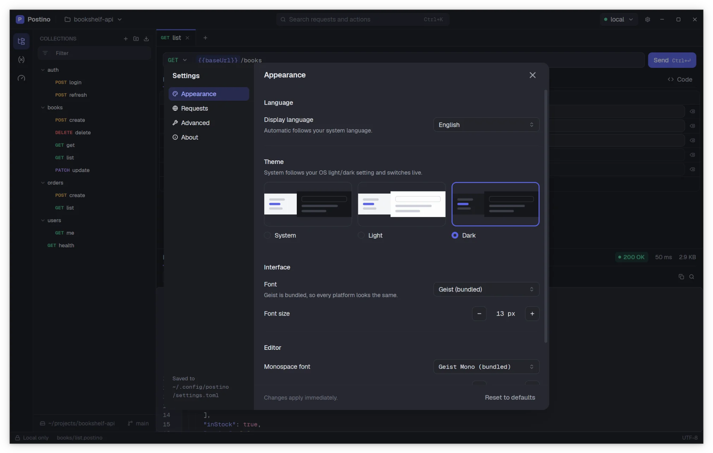

Settings
Open Settings with the gear in the title bar or Ctrl , (⌘ , on macOS). Changes apply immediately and are saved as you make them; there is no Save button.


Settings are grouped in four categories. Reset to defaults brings every setting back to its default value.
Appearance
| Setting | Default | Options |
|---|---|---|
| Language | Automatic | Automatic follows your system language. English, Español, Galego, Italiano. English is used for any system language Postino does not have. |
| Theme | System | System follows the light or dark setting of your OS and switches live. Light. Dark. |
| Interface font | Geist | Geist is bundled, so every platform looks the same. Any font installed on your system can be chosen. |
| Interface font size | 13 | 11 to 16, in steps of 1. |
| Editor monospace font | Geist Mono | Used in the URL bar, tables, code editors and the response body. Geist Mono is bundled. |
| Editor font size | 12.5 | 10 to 18, in steps of 0.5. |
You can also flip between light and dark with Toggle theme in the command palette.
Requests
TLS
Invalid certificates decides what happens when a server's certificate is self-signed, expired or issued for another host name:
| Option | Behavior |
|---|---|
| Send with warning (default) | The request is sent without verifying the certificate, and the response shows a warning that explains what was wrong. Handy for local servers with self-signed certificates, while still telling you about the problem. |
| Reject | The request fails with an error, like a browser would. |
| Don't verify | The request is sent without verifying the certificate and without any warning. |
A certificate error stops the TLS handshake before any request byte is written, so retrying without verification never sends a request twice.
Responses
Maximum size is the biggest response body Postino reads: 10, 20 (default), 50, 100 or 200 MB, where 1 MB is 1,000,000 bytes. A bigger response fails with an error that names the limit. A big response uses about 30 times its size in memory while it is shown, so raise the limit only as much as you need. In settings.toml you can set any value from 1 to 1000.
Advanced
Logging
Log level controls how much Postino writes to its log file: Off, Error, Warn, Info (default), Debug or Trace. Debug and Trace add detail to diagnose problems. The log file location is shown below the setting, with an Open folder button. Files are rotated every 5 MB and the last 10 are kept.
The POSTINO_LOG environment variable overrides the level at startup. See Command line and collecting a log.
Logs never contain request or response bodies, variable values, query strings or the values of sensitive headers such as Authorization or Cookie.
About
Shows the version and links to the release notes. What else it shows depends on how Postino was installed:
- macOS and Windows builds from the official installers have the in-app updater. Check for updates automatically (on by default) checks once, a few seconds after launch, and never polls in the background. Check now checks immediately. When an update has been downloaded and verified, Restart to update installs it. Restarting keeps your open tabs; if a tab has unsaved changes, Postino asks first.
- Linux packages say that updates come from your package manager.
- Other builds, such as one you compiled yourself, say that updates are not available in that build.
The privacy line states what Postino connects to on its own: nothing at all, or, in builds with the updater, only GitHub to check for updates. That check sends no identifiers.
The settings file
Settings are stored in settings.toml in Postino's configuration folder. The exact path is shown at the bottom of the Settings window, next to Saved to.
| System | Path |
|---|---|
| Linux | ~/.config/postino/settings.toml (or $XDG_CONFIG_HOME/postino/) |
| macOS | ~/Library/Application Support/postino/settings.toml |
| Windows | %APPDATA%\postino\settings.toml |
You can edit it by hand while Postino is closed. Keys you leave out take their default value, and an invalid value falls back to the default.
language = "auto" # auto, en, es, gl, it theme = "system" # system, light, dark ui_font = "Geist" ui_font_size = 13.0 # 11 to 16 mono_font = "Geist Mono" mono_font_size = 12.5 # 10 to 18 invalid_tls_certificates = "warn" # warn, reject, accept max_response_mb = 20 # 1 to 1000 log_level = "info" # off, error, warn, info, debug, trace check_updates = true # only used by builds with an updater